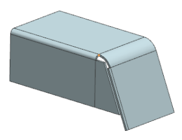
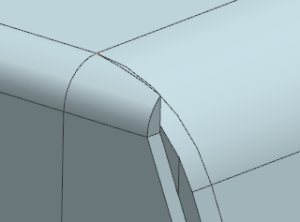
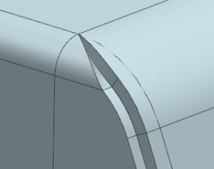
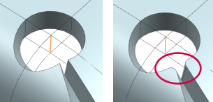
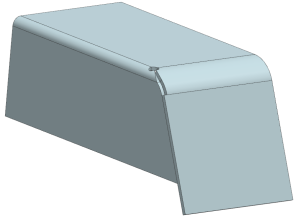

Try other closed corner options
-
In the Part Navigator, right click the SB Closed Corner feature, and choose Edit with Rollback.

-
In the Closed Corner dialog box, open the Preview group and make sure that the Preview
 check box is selected.
check box is selected.
-
In the Corner Properties group, from the Treatment list, select Closed and then zoom in to view the result.

-
Select the Miter Corner
check box.

-
Cycle through various option combinations for corner and relief properties to see the results.
For this example, the following options were selected.
Corner Properties group
-
Treatment = Circular Cutout
-
Overlap = Overlapping
-
Gap = 0
-
Overlap Ratio = 1
-
Miter Corner =
-
Blend Miter =
Relief Properties group
-
Origin = Corner Point
-
Diameter = 5
-
Offset = 0
Note
For all the Corner Properties options in the Treatment list except Open and Closed, a Legend illustrates key parameters and relationships.
The new Blend Miter option removes the sharp edge in the Circular Cutout area.


-
-
Close the part now, or close all parts when you exit the session.